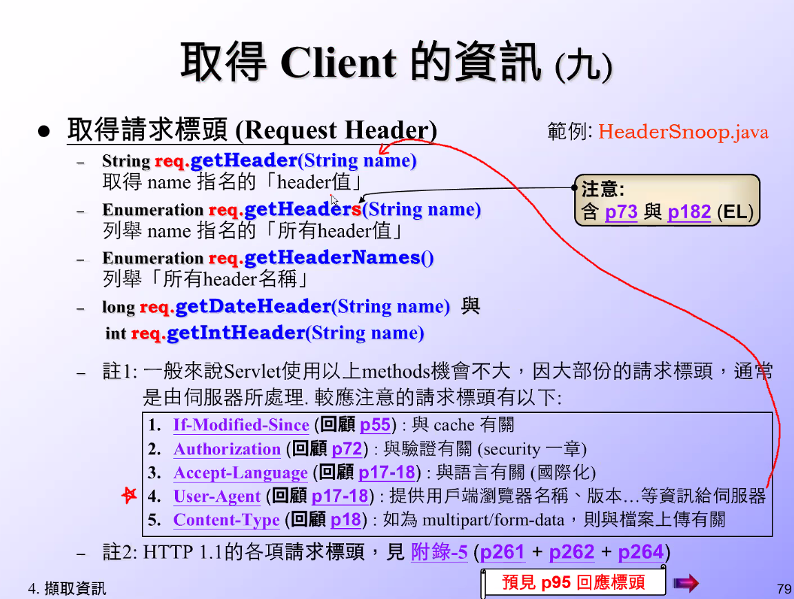

getServletContext();- 變數資料只跟等號右方有關，只要右方不變，變數名更改都無所謂，不同瀏覽器資料也相同

getSession();- 同一瀏覽器才是同一 seccion
- 共同: 即如果有 seccion 值就是沿用
- getSession(
true): 自動創建新 seccion getSession(false):不會創建新 seccion
- getSession(


- 假設瀏覽器從沒開過，此時執行 getSession(
false) 則此行會錯誤，因為 false 即不創建新 seccion

- 用於除錯用的時機就是，假設資料沒 set 就直接 get 的話，那就會 500


未來修改只要修改 param-value 即可，但此方法只是好維護但沒有提升效能
任何文字都可用此方式，例如 ecxel


- 此範例中設定好
context-param後續使用getInitParameter取得資料

- 給資料庫專用


- 取得 client 資訊



- 取得 client 資訊範例
範例程式: "/SL314/src/servlet_examples/ExportRestriction.java"
package servlet_examples;
import java.io.*;
import javax.servlet.*;
import javax.servlet.http.*;
public class ExportRestriction extends HttpServlet {
public void doGet(HttpServletRequest req, HttpServletResponse res)
throws ServletException, IOException {
res.setContentType("text/html");
PrintWriter out = res.getWriter();
// Get the client's hostname
String remoteHost = req.getRemoteHost();
out.println("client's hostname or IP="+remoteHost);
// See if the client is allowed
if (! isHostAllowed(remoteHost)) {
out.println("<br><font color='red'> Access denied ..... </font>");
}
else {
out.println("<br><font color='blue'> Access granted .....</font>");
// Display download links, etc...
}
}
// Disallow hosts ending with .cu, .ir, .iq, .kp, .ly, .sy, and .sd.
private boolean isHostAllowed(String host) {
return (!host.endsWith(".80") && // 添加ip名稱即不可讓此連線進入
!host.endsWith(".cu") &&
!host.endsWith(".ir") &&
!host.endsWith(".iq") &&
!host.endsWith(".kp") &&
!host.endsWith(".ly") &&
!host.endsWith(".sy") &&
!host.endsWith(".sd"));
}
}
- 要保護的檔案若改成
/A.html就只修改此頁，可以逐一添加


- 不能錯字的原因是為了與 xml 做比較

- both 的授權比較高


- 伺服器中提供兩種驗證方式 (阿公阿罵拿著掃把帶濾鏡)


- 使用部屬描述檔含
驗證
- Java 本身 api 包含加密解密


req.getParameter(String name)常用- text, radio, select, textAreia 使用
- text : 空字串
- radio : 空值
- select : 請選擇
- textAreia : 空字串
- text, radio, select, textAreia 使用
req.getParameterValues(String name)常用- checkbox 專用
- checkbox: 空值
- 勾幾個長度就是多少
- 沒勾選則是空值
有勾有送沒勾沒送
reg.getQueryString()很少用- 後續需要自行切割取得後的字串


HTTP 身份驗證-Basic 測試步驟
- 總帳密設置
檔案路徑: "C:\EA102_WebApp\apache-tomcat-9.0.35\conf\tomcat-users.xml"
<role rolename="tomcat"/>
<role rolename="role1"/>
<role rolename="manager-gui"/>
<role rolename="manager-script"/>
<role rolename="admin-gui"/>
<user username="tomcat" password="tomcat" roles="tomcat"/>
<user username="both" password="tomcat" roles="tomcat,role1"/>
<user username="role1" password="tomcat" roles="role1"/>
<user username="manager-gui" password="manager-gui" roles="manager-gui"/>
<user username="manager-script" password="manager-script" roles="manager-script"/>
<user username="admin-gui" password="admin-gui" roles="admin-gui"/>
- 修改 xml，改目錄權限
檔案路徑: "C:\EA102_WebApp\apache-tomcat-9.0.35\webapps\IBM_9\WEB-INF\web.xml"
<?xml version="1.0" encoding="ISO-8859-1"?>
<!-- 以下為 Servlet2.3 、 Servlet2.4 、 Servlet2.5 、 Servlet3.0 、 Servlet3.1 、 Servlet4.0 各個Servlet版本的部署描述檔 web.xml 的頂層標籤 -->
<!--
<!DOCTYPE web-app
PUBLIC "-//Sun Microsystems, Inc.//DTD Web Application 2.3//EN"
"http://java.sun.com/dtd/web-app_2_3.dtd">
<web-app>
-->
<!--
<web-app xmlns="http://java.sun.com/xml/ns/j2ee"
xmlns:xsi="http://www.w3.org/2001/XMLSchema-instance"
xsi:schemaLocation="http://java.sun.com/xml/ns/j2ee
http://java.sun.com/xml/ns/j2ee/web-app_2_4.xsd"
version="2.4">
-->
<!--
<web-app xmlns="http://java.sun.com/xml/ns/javaee"
xmlns:xsi="http://www.w3.org/2001/XMLSchema-instance"
xsi:schemaLocation="http://java.sun.com/xml/ns/javaee
http://java.sun.com/xml/ns/javaee/web-app_2_5.xsd"
version="2.5">
-->
<!--
<web-app xmlns="http://java.sun.com/xml/ns/javaee"
xmlns:xsi="http://www.w3.org/2001/XMLSchema-instance"
xsi:schemaLocation="http://java.sun.com/xml/ns/javaee
http://java.sun.com/xml/ns/javaee/web-app_3_0.xsd"
version="3.0"
metadata-complete="false">
-->
<!--
<web-app xmlns="http://xmlns.jcp.org/xml/ns/javaee"
xmlns:xsi="http://www.w3.org/2001/XMLSchema-instance"
xsi:schemaLocation="http://xmlns.jcp.org/xml/ns/javaee
http://xmlns.jcp.org/xml/ns/javaee/web-app_3_1.xsd"
version="3.1"
metadata-complete="false">
-->
<web-app xmlns="http://xmlns.jcp.org/xml/ns/javaee"
xmlns:xsi="http://www.w3.org/2001/XMLSchema-instance"
xsi:schemaLocation="http://xmlns.jcp.org/xml/ns/javaee
http://xmlns.jcp.org/xml/ns/javaee/web-app_4_0.xsd"
version="4.0"
metadata-complete="false">
<!-- <request-character-encoding>Big5</request-character-encoding> -->
<!-- 使用資料庫連線池 DataSource-JNDI的設定 -->
<resource-ref>
<description>DB Connection</description>
<res-ref-name>jdbc/TestDB</res-ref-name>
<res-type>javax.sql.DataSource</res-type>
<res-auth>Container</res-auth>
</resource-ref>
<servlet> <!-- 已經無法以註冊名稱(http://localhost:8081/IBM/servlet/hi)的方式執行,因為Invoker servlet的功能在Tomcat 7.x 已經被移除 -->
<servlet-name>hi</servlet-name>
<servlet-class>HelloWorld</servlet-class>
</servlet>
<servlet-mapping> <!-- 明確對應 http://localhost:8081/IBM/hello.html -->
<servlet-name>hi</servlet-name>
<url-pattern>/hello.html</url-pattern>
</servlet-mapping>
<servlet-mapping> <!-- 前置路徑對應 http://localhost:8081/IBM/hello.html/xxxxx -->
<servlet-name>hi</servlet-name>
<url-pattern>/hello.html/*</url-pattern>
</servlet-mapping>
<servlet-mapping> <!-- 延伸檔名對應 http://localhost:8081/IBM/xxx/yyy/zzz.mm-->
<servlet-name>hi</servlet-name>
<url-pattern>*.mm</url-pattern>
</servlet-mapping>
<!-- HelloWorld的第二個註冊名稱與mapping -->
<servlet>
<servlet-name>HelloWorld</servlet-name>
<servlet-class>HelloWorld</servlet-class>
</servlet>
<servlet-mapping>
<servlet-name>HelloWorld</servlet-name>
<url-pattern>/HelloWorld</url-pattern>
</servlet-mapping>
<!-- Hello的註冊名稱與mapping -->
<servlet>
<servlet-name>Hello</servlet-name>
<servlet-class>Hello</servlet-class>
</servlet>
<servlet-mapping>
<servlet-name>Hello</servlet-name>
<url-pattern>/Hello</url-pattern>
</servlet-mapping>
<!-- HTTP身份驗證-Basic HTTP Basic Authentication , 【username 為 tomcat ; password 為 tomcat】【可查看tomcat-users.xml】-->
<security-constraint>
<web-resource-collection>
<web-resource-name>
SecretProtection
</web-resource-name>
<url-pattern>
/*
</url-pattern>
<http-method>
GET
</http-method>
<http-method>
POST
</http-method>
</web-resource-collection>
<auth-constraint>
<role-name>
tomcat
</role-name>
</auth-constraint>
</security-constraint>
<login-config>
<auth-method>
BASIC
</auth-method>
<realm-name>
Default
</realm-name>
</login-config>
<security-role>
<role-name>
tomcat
</role-name>
</security-role>
<!-- error-page 錯誤網頁 -->
<!--
<error-page>
<error-code>
400
</error-code>
<location>
/error.html
</location>
</error-page>
<error-page>
<error-code>
404
</error-code>
<location>
/error.html
</location>
</error-page>
<error-page>
<error-code>
500
</error-code>
<location>
/error.html
</location>
</error-page>
<error-page>
<exception-type>
javax.servlet.ServletException
</exception-type>
<location>
/error.html
</location>
</error-page>
-->
</web-app>
<!-- Servlet 3.0 開始的部署描述檔 web.xml 的頂層標籤 有一個 metadata-complete 屬性，該屬性指定當前的部署描述檔 web.xml 是否是完全的。 -->
<!-- 預設為false -->
<!-- 如果設置為 true，則在部署時將只依賴 web.xml，將忽略所有的Anotation註解（同時也會跳過 web-fragment.xml 的掃瞄，亦即禁用可插性支持）-->
<!-- 如果在web.xml、Anotation、web-fragment.xml中所設定的Servlet有同名的註冊名稱，則以web.xml中的設定為主（順序為web.xml -> Anotation -> web-fragment.xml）-->
執行貓 startup.bat
清除快取
Ctrl + Shift + Delete進入
http://localhost:8081/manager/html使用
manager-gui登入進入 IBM9
使用
tomcat登入順利登入即測試完成
Client 端取值測試
範例程式: "/SL314/Java Resource/src/servlet_examples/Hello.java"
package servlet_examples;
import java.io.*;
import javax.servlet.*;
import javax.servlet.http.*;
public class Hello extends HttpServlet {
public void doGet(HttpServletRequest req, HttpServletResponse res)
throws ServletException, IOException {
req.setCharacterEncoding("Big5");
res.setContentType("text/html; charset=Big5");
PrintWriter out = res.getWriter();
String name = req.getParameter("name");
if(name != null) {
if(!name.trim().isEmpty()){
out.println("<HTML>");
out.println("<HEAD><TITLE>Hello, " + name + "</TITLE></HEAD>");
out.println("<BODY>");
out.println("Hello, 你好: " + name);
out.println("</BODY></HTML>");
}
}
}
public String getServletInfo() {
return "A servlet that knows the name of the person to whom it's" +
"saying hello";
}
}
範例程式: "SL314/WebContent/form.html"
<!DOCTYPE html PUBLIC "-//W3C//DTD HTML 4.01 Transitional//EN">
<html>
<head>
<meta http-equiv="Content-Type" content="text/html; charset=BIG5" />
<title>form.html</title>
</head>
<body>
<form method="get" action="Hello">
請輸入您的名字!
<p>
<input type="checkbox" name="name" value="peter1" />
<input type="checkbox" name="name" value="peter2" />
<input type="checkbox" name="name" value="peter3" />
</p>
<input type="SUBMIT" />
</form>
</body>
</html>
- checkbox: 沒勾值時，瀏覽器的資料
http://localhost:8081/SL314/Hello?
- checkbox: 勾一個時
http://localhost:8081/SL314/Hello?name=peter1
- checkbox: 勾兩個時
http://localhost:8081/SL314/Hello?name=peter1&name=peter2
http://localhost:8081/SL314/Hello?name=peter1&name=peter3
getParameterValues 測試
範例程式: "/SL314/src/servlet_examples/ParameterSnoop.java"
/*
* http://localhost:8888/SL314/ParameterSnoop?name1=peter1&name2=peter2&name3=peter3
*/
package servlet_examples;
import java.io.*;
import java.util.*;
import javax.servlet.*;
import javax.servlet.http.*;
public class ParameterSnoop extends HttpServlet {
public void doGet(HttpServletRequest req, HttpServletResponse res)
throws ServletException, IOException {
res.setContentType("text/plain; charset=UTF-8");
PrintWriter out = res.getWriter();
out.println("Query String:");
out.println(req.getQueryString());
out.println();
req.setCharacterEncoding("UTF-8");
out.println("Request Character Encoding:");
out.println(req.getCharacterEncoding());
out.println();
out.println("Request Parameters:");
Enumeration en = req.getParameterNames();
while (en.hasMoreElements()) {
String name = (String) en.nextElement();
String values[] = req.getParameterValues(name);
if (values != null) {
for (int i = 0; i < values.length; i++) {
out.println(name + " [" + i + "]: " + values[i]);
System.out.println(name + " [" + i + "]: " + values[i]);
}
}
}
}
public void doPost(HttpServletRequest req, HttpServletResponse res)
throws ServletException, IOException {
doGet(req, res);
}
}
- 模擬前端輸入資料
"http://localhost:8888/SL314/ParameterSnoop?name1=peter1&name2=peter2&name3=peter3"
Query String:
name1=peter1&name2=peter2&name3=peter3
Request Character Encoding:
UTF-8
Request Parameters:
name1 [0]: peter1
name2 [0]: peter2
name3 [0]: peter3
- 模擬前端輸入中文
"http://localhost:8081/SL314/ParameterSnoop?name=%E6%B8%AC%E8%A9%A6"
Query String:
name=%E6%B8%AC%E8%A9%A6
Request Character Encoding:
UTF-8
Request Parameters:
name [0]: 測試
課堂作業
範例程式: "/SL314/Java Resource/src/servlet_examples/Hello.java"
範例程式: "SL314/WebContent/form.html"
- 實作
"/SL314/src/servlet_examples/HelloGet.java"
package servlet_examples;
import java.io.*;
import javax.servlet.*;
import javax.servlet.http.*;
public class HelloGet extends HttpServlet {
public void doGet(HttpServletRequest req, HttpServletResponse res)
throws ServletException, IOException {
req.setCharacterEncoding("Big5");
res.setContentType("text/html; charset=Big5");
PrintWriter out = res.getWriter();
String name = req.getParameter("name");
if(name != null) {
if(!name.trim().isEmpty()){
out.println("<HTML>");
out.println("<HEAD><TITLE>Hello, " + name + "</TITLE></HEAD>");
out.println("<BODY>");
out.println("Hello, 你好: " + name);
out.println("</BODY></HTML>");
}
}
}
public String getServletInfo() {
return "A servlet that knows the name of the person to whom it's" +
"saying hello";
}
}
Oracle 無法正常啟用
- 本機 > 管理 > 服務 >
- oracle...XE 開啟
- oracleServece 開啟
測試 servlet 可正常連線
- 使用範例
範例程式: "/SL314/src/Test_DataSource.java"
匯入新範例程式
資料位置: "G:\大吳\SL314_Servlet4課程分享\SL314_課程中分享\22_●emp_MVC_Basic"